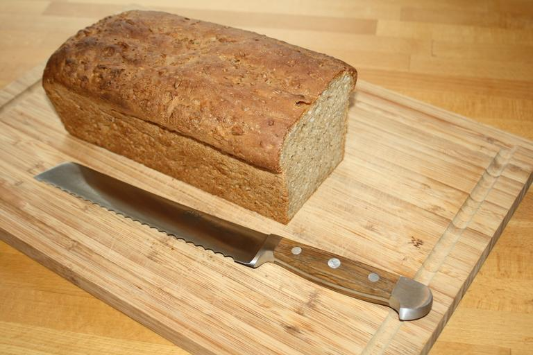

Bread

Bread worth Fighting For
This delightful bread is the pride of my House. The recipe has belonged to my family for quite a while.
I remember spending afternoons with my grandmother making this bread.
Ingredients
- Flour
- Yeast
- Milk
- Honey
- Salt
- water
Steps
- Add the yeast to warm water and let set for while completing the next step
- Scald the milk. Take off the heat and mix in the honey
- Once cooled enough to not kill the yeast, mix the water & yeast mixture with the milk & Honey mixture in a large bowl
- Add the salt and flour - mix until combined - let rest 10 mins
- Knead the dough for 10 mins, let rest until doubled in size
- Move to pans, let rest until doubled again
- Bake it
Home Page